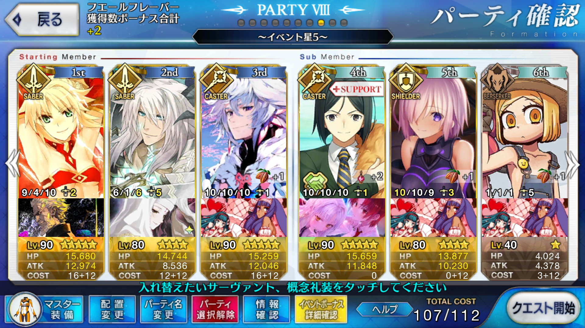

<!DOCTYPE HTML>
<html>
<head><meta name="generator" content="Hexo 3.9.0">
  <meta charset="utf-8">
  
  <title>【FGO】繁栄のチョコレートガーデンズ・オブ・バレンタイン ブラック級（2/4まで） | ぷらずま式改</title>
  <meta name="author" content="NPlasma">

  
  <meta name="description" content="NPlasmaの個人メモ">
  

  

  <meta name="viewport" content="width=device-width, initial-scale=1, maximum-scale=1">

  <meta property="og:title" content="【FGO】繁栄のチョコレートガーデンズ・オブ・バレンタイン ブラック級（2/4まで）">
  <meta property="og:site_name" content="ぷらずま式改">

  
  

  
    <meta property="og:image" content="/img/ogp.png">
  

  <!-- ogp -->
  
    
      <meta name="description" content="この記事ではFGOイベントの周回を扱います。 編成画像にて最終再臨絵のネタバレがあるのでご注意を">
<meta name="keywords" content="Fate,ゲーム,Fate&#x2F;GrandOrder,FGO,FGOバレンタイン2018">
<meta property="og:type" content="article">
<meta property="og:title" content="【FGO】繁栄のチョコレートガーデンズ・オブ・バレンタイン ブラック級（2&#x2F;4まで）">
<meta property="og:url" content="http://elleonard.github.io/nplus_doc/2018/02/02/game/fate/fgo/chocolate-garden/black-to-0204/index.html">
<meta property="og:site_name" content="ぷらずま式改">
<meta property="og:description" content="この記事ではFGOイベントの周回を扱います。 編成画像にて最終再臨絵のネタバレがあるのでご注意を">
<meta property="og:locale" content="ja">
<meta property="og:image" content="http://elleonard.github.io/nplus_doc/2018/02/02/game/fate/fgo/chocolate-garden/black-to-0204/black-to-0204.png">
<meta property="og:updated_time" content="2019-09-13T04:56:39.115Z">
<meta name="twitter:card" content="summary">
<meta name="twitter:title" content="【FGO】繁栄のチョコレートガーデンズ・オブ・バレンタイン ブラック級（2&#x2F;4まで）">
<meta name="twitter:description" content="この記事ではFGOイベントの周回を扱います。 編成画像にて最終再臨絵のネタバレがあるのでご注意を">
<meta name="twitter:image" content="http://elleonard.github.io/nplus_doc/2018/02/02/game/fate/fgo/chocolate-garden/black-to-0204/black-to-0204.png">
<meta name="twitter:creator" content="@elleonard_f">
    
    <meta name="twitter:image" content="http://elleonard.github.io/nplus_doc/img/ogp.png">
  

  <link rel="alternate" href="/nplus_doc/atom.xml" title="ぷらずま式改" type="application/atom+xml">
  <link rel="stylesheet" href="/nplus_doc/css/style.css" media="screen" type="text/css">
  <!--[if lt IE 9]><script src="//html5shiv.googlecode.com/svn/trunk/html5.js"></script><![endif]-->
  


  <link rel="apple-touch-icon" sizes="180x180" href="/nplus_doc/favicon/apple-touch-icon.png">
  <link rel="icon" type="image/png" sizes="32x32" href="/nplus_doc//favicon/favicon-32x32.png">
  <link rel="icon" type="image/png" sizes="16x16" href="/nplus_doc//favicon/favicon-16x16.png">
  <link rel="manifest" href="/nplus_doc//favicon/site.webmanifest">
  <link rel="mask-icon" href="/nplus_doc//favicon/safari-pinned-tab.svg" color="#5bbad5">
  <meta name="msapplication-TileColor" content="#da532c">
  <meta name="theme-color" content="#ffffff">
</head>
</html>

<body>
  <header id="header" class="inner"><div class="alignleft">
  <h1><a href="/nplus_doc/">ぷらずま式改</a></h1>
  <h2><a href="/nplus_doc/">NPlasma個人メモ</a></h2>
</div>
<nav id="main-nav" class="alignright">
  <ul>
    
      <li><a href="/">Home</a></li>
    
      <li><a href="/nplus_doc/2016/05/29/about/">About</a></li>
    
      <li><a href="https://twitter.com/elleonard_f">Twitter</a></li>
    
      <li><a href="https://github.com/elleonard">GitHub</a></li>
    
      <li><a href="/nplus_doc/2018/02/09/game/fate/fgo/fgo-link/">FGO</a></li>
    
  </ul>
  <div class="clearfix"></div>
</nav>
<div class="clearfix"></div></header>
  <div id="content" class="inner">
    <div id="main-col" class="alignleft"><div id="wrapper"><article class="post">
  
  <div class="post-content">
    <header>
      
        <div class="icon"></div>
        <time datetime="2018-02-01T17:14:42.000Z"><a href="/nplus_doc/2018/02/02/game/fate/fgo/chocolate-garden/black-to-0204/">2018-02-02</a></time>
      
      
  
    <h1 class="title">【FGO】繁栄のチョコレートガーデンズ・オブ・バレンタイン ブラック級（2/4まで）</h1>
  

    </header>
    <div class="entry">
      
        <div id="toc" class="toc-article">
          <p class="toc-title">目次</p>
          <ol class="toc"><li class="toc-item toc-level-1"><a class="toc-link" href="#基本方針"><span class="toc-text">基本方針</span></a></li><li class="toc-item toc-level-1"><a class="toc-link" href="#ドロップアイテム"><span class="toc-text">ドロップアイテム</span></a></li><li class="toc-item toc-level-1"><a class="toc-link" href="#エネミー構成"><span class="toc-text">エネミー構成</span></a></li><li class="toc-item toc-level-1"><a class="toc-link" href="#天地人相性"><span class="toc-text">天地人相性</span></a></li><li class="toc-item toc-level-1"><a class="toc-link" href="#編成例"><span class="toc-text">編成例</span></a></li><li class="toc-item toc-level-1"><a class="toc-link" href="#周回用キャラ選別"><span class="toc-text">周回用キャラ選別</span></a></li></ol>
        </div>
        <p>この記事ではFGOイベントの周回を扱います。</p>
<p>編成画像にて最終再臨絵のネタバレがあるのでご注意を</p>
<a id="more"></a>

<h1 id="基本方針"><a href="#基本方針" class="headerlink" title="基本方針"></a>基本方針</h1><ul>
<li>3T周回する</li>
<li>可能な限りドロップ追加礼装を搭載する</li>
</ul>
<h1 id="ドロップアイテム"><a href="#ドロップアイテム" class="headerlink" title="ドロップアイテム"></a>ドロップアイテム</h1><ul>
<li>戦馬の幼角</li>
<li>万死の毒針</li>
</ul>
<p>毒針はドロップ率が高い<br>セミラミスの育成にも必要になるため、必要ならば周回したい</p>
<h1 id="エネミー構成"><a href="#エネミー構成" class="headerlink" title="エネミー構成"></a>エネミー構成</h1><ul>
<li>チョココーン（HP:14万）</li>
<li>槍清姫（HP:23万）</li>
</ul>
<h1 id="天地人相性"><a href="#天地人相性" class="headerlink" title="天地人相性"></a>天地人相性</h1><p>相性有利の場合、与ダメージ+10％<br>相性不利の場合、与ダメージ-10％</p>
<table><thead><tr><th style="text-align:center" rowspan="1" colspan="1">敵</th><th style="text-align:center" rowspan="1" colspan="1">天地人</th></tr></thead><tbody><tr><td style="text-align:center" rowspan="1" colspan="1">チョココーン</td><td style="text-align:center" rowspan="1" colspan="1">地</td></tr><tr><td style="text-align:center" rowspan="1" colspan="1">槍清姫</td><td style="text-align:center" rowspan="1" colspan="1">地</td></tr><tr></tr></tbody></table>どちらも地属性なので、天属性が有効
ただし、セイバーの天属性はラーマと鈴鹿御前のみ

<h1 id="編成例"><a href="#編成例" class="headerlink" title="編成例"></a>編成例</h1><p></p>
<p>モードレッドの宝具リチャージとジークフリートの竜特攻を利用する<br>モードレッドのスキル3が最大レベルまであがっている必要がある</p>
<p>1wは夢幻のカリスマ＋幻術からのクラレントブラッドアーサー<br>これでNPが20リチャージされる</p>
<p>2wはモードレッドに英雄作成してからオーダーチェンジでマーリン→孔明<br>孔明のスキルとモードレッドのスキルでNPを100にして、もう一度クラレントブラッドアーサー<br>モードレッドのバフはここで全て吐ききって良い<br>宝具だけでは仕留められないので、１発だけ追撃をセイバーに入れさせる<br>不安なら直感で星を増やしておくのも良い</p>
<p>3wは凸菩薩のジークフリートでバルムンクを放つだけ<br>スキル3と宝具の特攻が合わさり、全体強化も入れておけばそれだけで3wが終わる</p>
<h1 id="周回用キャラ選別"><a href="#周回用キャラ選別" class="headerlink" title="周回用キャラ選別"></a>周回用キャラ選別</h1><p>魔性特攻かつ天属性で2wのチョココーンを片付けられるラーマが候補にはなるか<br>鈴鹿御前も悪い選択肢ではなさそう</p>

      
    </div>
    
    <footer>
        <div class="alignright">
            <a href="https://twitter.com/share?ref_src=twsrc%5Etfw" class="twitter-share-button" data-text="【FGO】繁栄のチョコレートガーデンズ・オブ・バレンタイン ブラック級（2/4まで） | ぷらずま式改" data-url="http://elleonard.github.io/nplus_doc/2018/02/02/game/fate/fgo/chocolate-garden/black-to-0204/" data-via="elleonard_f" data-show-count="false">Tweet</a><script async src="https://platform.twitter.com/widgets.js" charset="utf-8"></script>
        </div>
        
  
  <div class="categories">
    <a href="/nplus_doc/categories/FGO/">FGO</a>
  </div>

        
  
  <div class="tags">
    <a href="/nplus_doc/tags/Fate/">Fate</a>, <a href="/nplus_doc/tags/ゲーム/">ゲーム</a>, <a href="/nplus_doc/tags/Fate-GrandOrder/">Fate/GrandOrder</a>, <a href="/nplus_doc/tags/FGO/">FGO</a>, <a href="/nplus_doc/tags/FGOバレンタイン2018/">FGOバレンタイン2018</a>
  </div>

        
          <div class="article-prev">
              <a href="/nplus_doc/2018/02/05/game/fate/fgo/chocolate-garden/gray-to-0208/">【FGO】繁栄のチョコレートガーデンズ・オブ・バレンタイン グレー級（2/8まで） <span class="prev-arrow"/></a>
            </div>
        
        
          <div class="article-next">
            <a href="/nplus_doc/2018/02/02/game/fate/fgo/chocolate-garden/gray-to-0204/">【FGO】繁栄のチョコレートガーデンズ・オブ・バレンタイン グレー級（2/4まで） <span class="next-arrow"/></a>
          </div>
        
        <!-- partial('post/share') -->
      <div class="clearfix"></div>
    </footer>
  </div>
</article>


</div></div>
    <aside id="sidebar" class="alignright">
  <div class="search">
  <form action="//google.com/search" method="get" accept-charset="utf-8">
    <input type="search" name="q" results="0" placeholder="検索">
    <input type="hidden" name="q" value="site:elleonard.github.io/nplus_doc">
  </form>
</div>

  
<div class="widget tag">
  <h3 class="title">カテゴリ</h3>
  <ul class="entry">
  
    <li><a href="/nplus_doc/categories/FGO/">FGO</a><small>47</small></li>
  
    <li><a href="/nplus_doc/categories/niconico/">niconico</a><small>3</small></li>
  
    <li><a href="/nplus_doc/categories/アニメ感想/">アニメ感想</a><small>9</small></li>
  
    <li><a href="/nplus_doc/categories/ゲーム/">ゲーム</a><small>46</small></li>
  
    <li><a href="/nplus_doc/categories/ゲーム/ゲームレビュー/">ゲームレビュー</a><small>35</small></li>
  
    <li><a href="/nplus_doc/categories/ゲーム制作/">ゲーム制作</a><small>7</small></li>
  
    <li><a href="/nplus_doc/categories/遊戯王ブロンティーズ/デッキレシピ/">デッキレシピ</a><small>4</small></li>
  
    <li><a href="/nplus_doc/categories/小説/">小説</a><small>3</small></li>
  
    <li><a href="/nplus_doc/categories/情報技術/">情報技術</a><small>11</small></li>
  
    <li><a href="/nplus_doc/categories/漫画/">漫画</a><small>2</small></li>
  
    <li><a href="/nplus_doc/categories/百合/">百合</a><small>6</small></li>
  
    <li><a href="/nplus_doc/categories/艦これ/">艦これ</a><small>76</small></li>
  
    <li><a href="/nplus_doc/categories/遊戯王ブロンティーズ/">遊戯王ブロンティーズ</a><small>4</small></li>
  
    <li><a href="/nplus_doc/categories/雑記/">雑記</a><small>4</small></li>
  
  </ul>
</div>


  
<div class="widget tag">
  <h3 class="title">最近の投稿</h3>
  <ul class="entry">
    
      <li>
        <a href="/nplus_doc/2020/02/04/game/crystar/">【ゲーム感想】CRYSTAR -クライスタ-</a>
      </li>
    
      <li>
        <a href="/nplus_doc/2020/01/21/game/azurlane-crosswave/">【ゲーム感想】アズールレーン クロスウェーブ</a>
      </li>
    
      <li>
        <a href="/nplus_doc/2020/01/19/game/bloodborne/">【ゲーム感想】Bloodborne</a>
      </li>
    
      <li>
        <a href="/nplus_doc/2020/01/12/game/monster-hunter/monster-hunter-world-iceborne/">【ゲーム感想】モンスターハンターワールド：アイスボーン</a>
      </li>
    
      <li>
        <a href="/nplus_doc/2019/12/31/misc/2019/">2019年の振り返り</a>
      </li>
    
  </ul>
</div>


  
<div class="widget tag">
  <h3 class="title">Link</h3>
  <ul class="entry">
    
      <li>
        <a href="https://www.nicovideo.jp/">niconico</a>
      </li>
    
      <li>
        <a href="http://lovingtheflags1986.blog96.fc2.com/">国旗と酒が待ち遠しいドリル日記</a>
      </li>
    
  </ul>
</div>


</aside>
    
    <div class="clearfix"></div>
  </div>
  <footer id="footer" class="inner"><div class="alignleft">
  <p>
  
  &copy; 2020 NPlasma
  
  All rights reserved.</p>
  <p>Powered by <a href="http://hexo.io/" target="_blank">Hexo</a></p>
</div>
<div class="clearfix"></div>
</footer>
  <script src="/nplus_doc/js/jquery.imagesloaded.min.js"></script>
<script src="/nplus_doc/js/gallery.js"></script>


<link rel="stylesheet" href="/nplus_doc/fancybox/jquery.fancybox.css" media="screen" type="text/css">
<script src="/nplus_doc/fancybox/jquery.fancybox.pack.js"></script>
<script type="text/javascript">
(function($){
  $('.fancybox').fancybox();
})(jQuery);
</script>


<div id='bg'></div>
</body>
</html>
